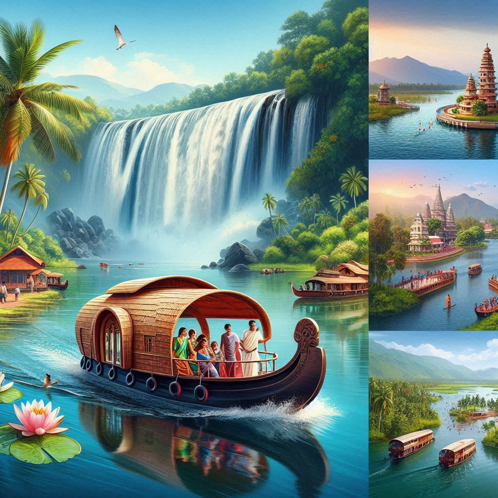
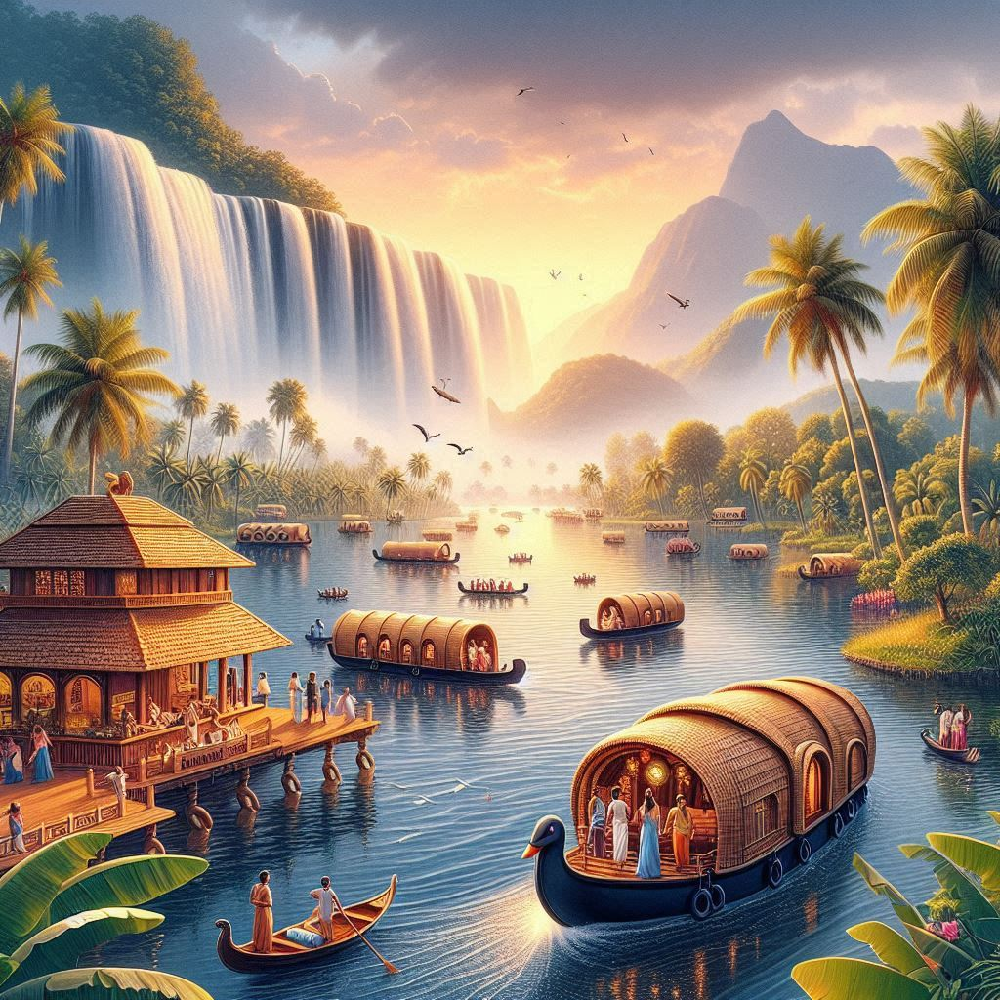

Kerala, often referred to as "God's Own Country," is one of India's most popular tourist destinations known for its unique blend of natural beauty, cultural heritage, and Ayurvedic wellness experiences. The state offers an array of attractions, ranging from tranquil backwaters and lush hill stations to vibrant festivals and historical landmarks. Here is a detailed overview of Kerala's tourism highlights:
1. Backwaters and Houseboats:
- Backwaters: The backwaters of Kerala are a network of interconnected canals, rivers, lakes, and inlets, offering a unique ecosystem teeming with diverse flora and fauna. Alleppey and Kumarakom are well-known for their houseboat cruises, where tourists can glide through the calm waters, enjoying traditional Kerala cuisine and serene landscapes.
- Houseboats: The houseboats, known as "kettuvallams," offer a blend of traditional charm and modern luxury, making a stay here a memorable experience.
2. Beaches:
- Kovalam Beach: Famous for its crescent-shaped coastline and lighthouse views.
- Varkala Beach: Known for its dramatic cliffs and natural springs.
- Other popular beaches include Cherai, Bekal, and Marari, ideal for relaxation, water sports, and breathtaking sunsets.
3. Hill Stations:
- Munnar: Known for sprawling tea estates, misty mountains, and wildlife sanctuaries.
- Wayanad: Famous for its lush forests, wildlife, and trekking trails.
- Thekkady: Offers thrilling wildlife safaris and a chance to witness elephants, tigers, and numerous bird species.
4. Wildlife Sanctuaries and National Parks:
- Periyar Tiger Reserve, Silent Valley National Park, Eravikulam National Park: Kerala is home to many protected areas and biodiversity hotspots where visitors can enjoy jungle treks, wildlife spotting, and birdwatching, with the chance to see endemic species.
5. Culture and Festivals:
- Onam: Kerala’s harvest festival, celebrated with grand feasts, snake boat races, and traditional dances.
- Thrissur Pooram: A spectacular temple festival known for its decorated elephants, percussion music, and fireworks.


6. Ayurveda and Wellness Tourism:
- Kerala is globally recognized as a center for Ayurvedic treatments and wellness therapies. Visitors flock to the state for rejuvenation therapies, yoga retreats, and herbal treatments offering a holistic healing experience.
7. Historical and Cultural Attractions:
- Fort Kochi: A blend of Portuguese, Dutch, and British influences, with attractions like Chinese fishing nets, St. Francis Church, and Mattancherry Palace.
- Other heritage sites include Bekal Fort, Thalassery Fort, and Jewish Synagogue.
8. Traditional Arts and Performances:
- Kathakali, Mohiniyattam, Koodiyattam, Theyyam: Classical dance forms that depict tales from Hindu epics.
- Kalari Payattu: An ancient martial art form, demonstrated for visitors.
9. Cuisine Tourism:
- Kerala's cuisine is a mix of rich, spicy, and coconut-infused dishes. From appam with stew to Karimeen Pollichathu, the culinary experiences offer a flavorful journey, often complemented by freshly caught seafood.
10. Eco-Tourism and Rural Experiences:
- Kerala promotes eco-tourism with treehouse stays in Wayanad, village tourism, and forest hikes. Visitors can immerse themselves in traditional farming, handicrafts, and rural life while supporting sustainable tourism practices.
Conclusion:
Kerala's tourism is characterized by its harmony with nature, cultural richness, and focus on wellness and relaxation. The combination of scenic landscapes, welcoming people, and memorable experiences makes it a preferred destination for travelers seeking peace, adventure, and cultural immersion.